Khi các bạn rơi vào bất cứ một trường hợp nào mà phải trụ lại rất lâu trong vùng hoang dã, các bạn không thể thụ động bó gối đếm thời gian chầm chậm trôi qua. Sự thụ động đó cũng sẽ chầm chậm bào mòn thể xác và tinh thần của các bạn. Các bạn phải biết cách tổ chức cho mình một cuộc sống tốt đẹp. Biết dùng sức khỏe, nghị lực và thời gian để phục vụ cho những nhu cầu và tiện nghi của chính mình. Như thế thì thời gian sẽ qua mau và sự sinh tồn lại gia tăng. Các bạn sẽ tìm thấy sự thú vị và ý nghĩa của cuộc sống
THUẦN DƯỠNG THÚ HOANG
Trong cuộc sống nơi hoang dã, thuần dưỡng thú hoang là một việc làm làm rất cần thiết. Một số thú, vừa là bạn bè của chúng ta vừa giúp cho chúng ta thư giãn, bớt cô đơn (điều mà người sống nơi hoang dã sợ nhất), vừa có việc làm để bớt suy nghĩ, lo lắng, sợ hãi... hơn nữa, chúng ta còn có một số động vật có thể giúp cho chúng ta chủ động được nguồn thực phẩm.
Căn cứ vào các di vật khảo cổ, việc thuần dưỡng thú hoang đã được người tiền sử thực hiện cách đây tối thiểu là 12.000 năm, vào thời mà con người thuần dưỡng đầu tiên. Một số chó sói bạo dạn đến gần nơi con người sinh sống, ăn những thức ăn thừa rồi ở lại với người. Đó là giai đoạn thuần hóa. Để thuần dưỡng, con người giữ lại những chú sói con hay sủa để nuôi (sói hoang chỉ tru mà rất ít sủa). Như thế, cổ nhân của chúng ta đã vô tình thực hiện việc chọn lọc di truyền một loài vật.
Khi con người bắt đầu làm nông nghiệp cách đây khoảng 9.000 năm, quyền lực của con người đối với thú càng ngày càng tăng. Đầu tiên, từ hai loài thú hoang nào đó, giống cừu và dê được hình thành; sau đó đến loài bò rừng oroc và lợn lòi (tổ tiên của bò và lợn nhà ngày nay). Kế tiếp là lừa, lạc đà, ngựa, ngỗng, gà... Cuối thời đại đồ đá mới, những người nông dân ở Trung Đông, châu Âu, châu Á, châu Mỹ đã thuần dưỡng phần lớn gia súc, gia cầm như chúng ta hiện này.
CHỌN THÚ ĐỂ THUẦN DUỠNG
Ngày xưa, người tiền sử phải thuần dưỡng một lòai vật trong nhiều thế kỷ. Ngày nay, các nhà khoa học mong muốn rút ngắn thời gian lại chỉ còn vài năm. Trong những năm gần đây, các nhà khoa học đã nghiên cứu, phác họa được đặc điểm tiêu biểu của một loài có thể đưa vào chăn nuôi được như sau:
° Có một cuộc sống tập quần: Một loài vật mà chỉ biết sống đơn độc, bảo vệ lãnh thổ, không chấp nhận sống chung với đồng loại, rất khó phù hợp với việc thuần dưỡng
° Có hệ thống trật tự bầy đàn: Mối quan hệ giữa các thành viên trong bầy phải được định hình rõ rệt mới có thể nuôi theo đàn được.
° Chấp nhận ràng buộc: Vật nuôi phải biết chấp nhận cảnh sống ràng buộc bên cạnh những con vật nuôi khác, đặc biệt, phải chấp nhận sự hiện diện của người chăn nuôi.
Theo những quan sát ban đầu, bò rừng, ngựa hoang, linh dương... là giống thích sống tập quần, tính bầy đàn rất phát triển, dễ thuần dưỡng. Hoẵng có lẽ là con vật khó thuần dưỡng nhất. Sau nhiều năm nuôi dưỡng chăm sóc, vẫn không thay đổi tập tính bao nhiêu. Quá trình thuần dưỡng hươu nai cũng không dễ dàng gì.
Trong giai đoạn thuần hóa ban đầu, một số hươu trưởng thành chết vì bệnh liệt cơ do quá căng thẳng (stress), hươu cái húc đầu vào hàng rào tự sát... Muốn nuôi dưỡng hươu con, phải cai sữa (cho dù là sữa bình), từ 6 tháng tuổi thì chúng mới không sợ người.
Ngoài ra, muốn thuần dưỡng thú hoang, các bạn cũng cần nắm bắt được một số tập tính và am tường về loại thức ăn thích hợp của từng loài thú. Những chim thú mới đánh bắt nơi hoang dã về, các bạn nhốt lại, cho ăn uống vừa đủ, nhưng hạn chế tối đa sự tiếp xúc gần giữa bạn và thú (nên xuất hiện xa xa, đủ để làm cho con thú thấy nhưng không gây ra sự sợ hãi). Hãy lén quan sát, khi thấy thú hết thức ăn thì bạn xuất hiện mang theo thức ăn và nước uống (nhất là nước uống). Dần dần, khi con thú tăng dần sự xuất hiện của bạn cho đến khi con thú không còn sợ hãi nữa...
Nếu có thể, các bạn nên đào ao thả cá. Những ngày may mắn đánh bắt được nhiều cá, các bạn thả nuôi để dành. Tuy nhiên, vì là cá hoang dã chưa qua giai đoạn thuần hóa, cho nên các bạn phải làm đăng chận cao lên. Nếu không, khi gặp thời tiết thích hợp, nó sẽ trườn lên bờ mà đi hết.
Ở Việt Nam, nhiều người đã thuần hóa được nhiều thú hoang có kinh tế cao như hươu sao, nai... nuôi dưỡng được một số thú khác như cá sấu, trăn, rắn... để làm kinh tế và nhiều chim thú lớn nhỏ khác nhau, nhưng chủ yếu là giải trí hơn là kinh tế.
LÀM VƯỜN
Tổ tiên của chúng ta chuyển từ thực phẩm bấp bênh do săn bắn hái lượm sang thực phẩm ổn định do chăn nuôi và trồng trọt cách đây rất lâu, cho thấy thực phẩm có từ chăn nuôi và trồng trọt rất hiệu quả. Nhưng do các bạn không có hạt giống, phải dùng những cây hoang dại để trồng, hoặc do các bạn chưa có kinh nghiệm về nông nghiệp cho nên trong giai đoạn khai phá, các bạn có thể vất vả mà thu hoạch lại khiêm tốn. Xin đừng chán nản, cứ bắt đầu lại sau sau mỗi lần thất bại, cứ mỗi lần như thế các bạn lại học thêm một số kinh nghiệm. Ngoài các cây để làm thực phẩm, các bạn cũng nên trồng một số hoa cảnh, nó sẽ nâng đỡ cho tinh thần của các bạn rất nhiều.
Như những người nông dân Việt Nam thường nói: nghề nông có 4 khâu quan trọng, đó là: nước, phân, cần, giống
Nước: Nếu nơi bạn đang ở mà không có nước hoặc nước rất khan hiếm, thì xin đừng mơ tưởng đến chuyện trồng trọt, vì đây là một khâu quan trọng nhất. Nước không những cần có đủ mà phải có quanh năm, nhất là vào mùa khô
Các bạn cũng phải biết loại cây nào cần nhiều nước hoặc thậm chí có thể sống ở dưới nước (lúa, rau muống, rau ngỗ, dừa nước...) loại nào cần tưới nhiều nhưng không thể ngập nước (bắp, đậu, rau cải...) và thời điểm nào cần nhiều nước, lúc nào thì cần tháo cạn...
Phân: Gồm có phân xanh và xác động vật, rong rêu... Các bạn phải ủ các loại cây xanh (tốt nhất là các loại cây thuộc họ đậu) để biến thành phân. Phân người và phân động vật thì phơi khô hay ủ cho hoai rồi mới bón (nếu không cây sẽ chết). Các bạn cũng có thể ngâm xác cá hay thú vật để lấy nước tưới (đậy kín, để xa nơi sinh hoạt, vì rất thối)
Các bạn phải biết cách bón cũng như thời điểm bón phân như bón lót, tăng cường, bón thúc...
Cần: Ở đây là siêng năng, cần cù... theo dõi và chăm sóc cây trồng, trút tỉa kinh nghiệm.
Giống: Trừ khi các bạn đã chuẩn bị trước, bằng không thì các bạn sẽ chọn những cây giống từ thiên nhiên. Cây giống có thể gieo từ hạt, đánh từ cây con, chiết cành, giâm cành, ghép mầm hay cành... Khi chọn giống, các bạn nên chọn những cây khoẻ mạnh, năng suất cao, dễ trông.
CÁC SINH HOẠT KHÁC
Ngoài ra, các bạn cũng nên sắp xếp thời gian để viết nhật ký, thám hiểm khám phá khu vực, sưu tầm và chế biến sẳn các loại dược thảo, dược liệu để dành, và nhất là làm thủ công, chế tạo các tiện nghi và vật dụng.
CHẾ TẠO VẬT DỤNG
Ở những nơi hoang dã, các bạn phải biết vận dụng trí thông minh và óc sáng tạo của chính mình, để tận dụng mọi vật liệu được tìm thấy trong vùng hoặc của chúng ta mang theo, chế tác thành những công cụ và vật dụng thường ngày, phục vụ cho nhu cầu cuộc sống. Trong công việc này, đôi khi chúng ta phải quay trở lại thời kỳ “đồ đá”. Nghĩa là phải biết tước những mảnh đá để làm rìu, dao... Biết dùng xương hay sừng thú làm công cụ, vũ khí... Biết lấy gáo dừa, vỏ ốc, vỏ sò... thay tô, chén, ly tách... Biết nắn đất sét rồi đem nung, biến nó thành nồi niêu, thau chậu, chum, vại... Biết dùng vỏ cây, lá cây, da thú, chằm kết thành nón mũ, thành giày dép, thành áo quần.. v.v và v.v
Nếu tháo vát, các bạn sẽ biến nơi hoang dã thành chỗ cư trú tiện nghi và thú vị, các bạn sẽ bận bịu suốt ngày, không còn thì giờ để buồn rầu, lo nghĩ. Bằng ngược lại, các bạn sẽ có những ngày thê lương buồn thảm. Cuộc sống kéo dài trong thiếu thốn lạnh lẽo, như thế chắc chắn các bạn không thể nào trụ được lâu. Các bạn hãy nhớ: không có ai có thể giúp được trong lúc này, chúng ta chỉ có thể đứng lên trên chính đôi bàn chân của chúng ta. Vươn lên với nghị lực của chính mình, bằng cách làm cho cuộc sống chúng ta tiện nghi và thoải mái trong việc chế tạocác vật dụng thường ngày, trong việc săn tìm thực phẩm, dọn dẹp và trang trí chỗ ở với niềm tin là sẽ có ngày, căn chòi của bạn được đón tiếp những người cứu hộ, và nó sẽ là niềm kiêu hãnh của các bạn...
Hãy vươn lên trên hoang dã, nếu không hoang dã sẽ nuốt chửng các bạn
Sau đây là một số vật dụng mà các bạn cần chế tạo để phục vụ trong sinh hoạt
TÚI ĐEO LƯNG
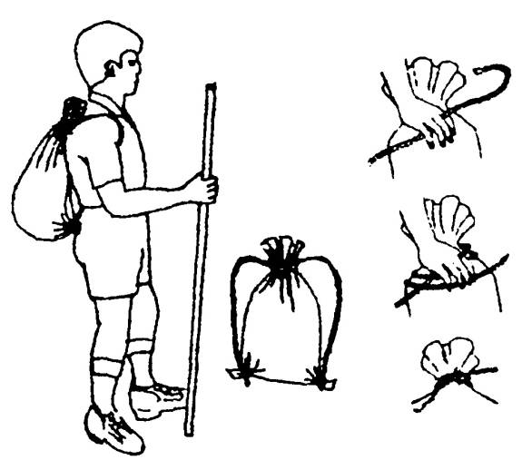
Bằng bao vải hay túi không thấm nước.
Đây là một cách giản dị và dễ dàng nhất. Các bạn lấy một cái túi bằng vải, nylon hay các vật liệu khác. Lấy sợi dây dài khoảng 1 mét. Cột miệng bao bằng “nút quai chèo” giữa sợi dây, các bạn cột vào hai góc của đáy bao (điều chỉnh sao cho vừa đeo). Các bạn đã có một túi đeo lưng, dễ dàng trong khi di chuyển.
Túi đeo lưng bằng quần
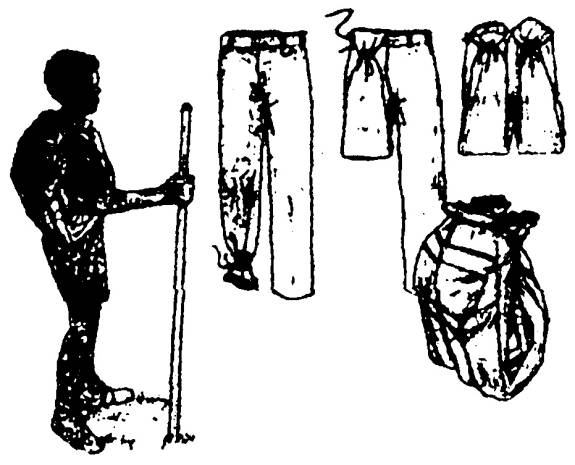
Các bạn lấy một cái quần bằng vải chắc (quần jean càng tốt). Túm hai ống quần lại để thừa một đoạn dây, bẻ gập lên phía trước lưng quần, luồn dây thừa theo đai dây nịt. Bỏ hành trang vào và cột túm lại. Nó sẽ thành cái ba lô (túi đeo lưng)
Túi đeo hông bằng áo gió, áo mưa
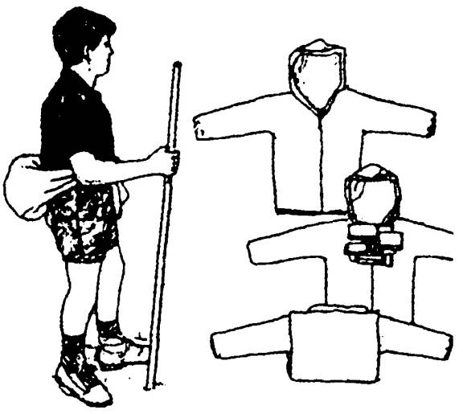
Loại áo nầy nhất thiết phải có mũ trùm liền áo. Các bạn trải áo ra, bỏ một số vật dụng cần thiết vào chỗ ngực áo. Gấp mũ trùm xuống đậy gọn vật dụng. Gấp vạt áo lên. Cột tay áo quanh bụng. Các bạn đã có một túi đeo hông dùng cho những lần đi khảo sát, săn bắn, thăm bẫy... quanh gần khu vực
CHẰM ÁO TƠI (ÁO ĐI MƯA)
Trong các vùng nông thôn Việt Nam trước đây, khi áo mưa bằng nhựa dẻo hay vải không thấm nước chưa có, người ta đã dùng một số lá như lá cọ, kè, buông... để chằm thành những chiếc áo gọi là “áo tơi”. Loại áo này có dạng hình ống, dài ngắn tùy theo sở thích và nhu cầu. Tuy hơi nặng nhưng chống mưa rất tốt.
Để làm một chiếc áo tơi, sau khi phơi khô và ép lá cho thẳng người ta chằm từ dưới lên như lợp nhà. Trên cùng người ta chằm nhỏ dần lại cho vừa khít vào cổ. Với một chiếc nón lá kèm theo, loại áo tơi này đã hiện diện từ rất xa xưa ở Việt Nam, giúp cho người dân có thể sinh hoạt được trong mưa gió
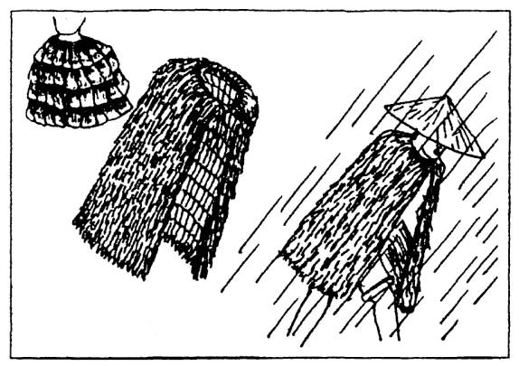
SỬ DỤNG VỎ CÂY
Nếu biết cách lột vỏ cây và chế tạo, tùy theo tính năng của từng loại vỏ cây và sự khéo léo của các bạn, chúng ta có thể làm thành rất nhiều vật dụng đa dạng
Thông dụng nhất là vỏ cây Phong, cây Bu-Lô (White Birch) là một loại cây có vỏ trắng, bền dẻo... có thể uốn nắn thành nhiều loại vật dụng khác nhau, từ con thuyền cho đến máng, chậu đựng nước (hay đựng bất cứ loại gì) có thể ghép vách, lợp mái, làm giày dép... Lớp màng mỏng bên trong vỏ có thể thay thế tính năng của giấy hay vải.
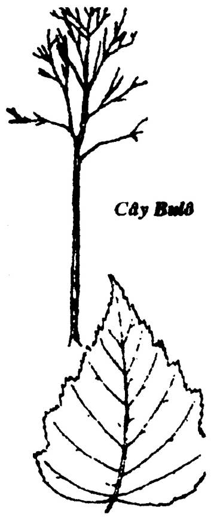
Ngoài ra, vỏ cây còn cung cấp cho chúng ta dược liệu, thực phẩm nhiên liệu, sợi...
Để lột vỏ cây, các bạn làm theo phương pháp dưới đây:
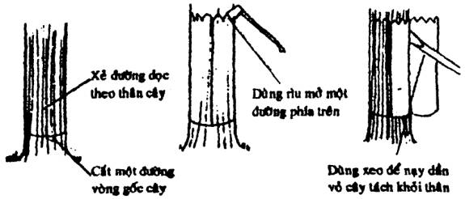
ĐAN TRE
Tre là một loại cây phổ biến là đa dụng của người Việt Nam, cũng như một số nước trong vùng nhiệt đới. Có rất nhiều loại tre khác nhau, từ hình dáng cho đến đặc tính cũng như công dụng. Riêng ở Việt Nam, chúng ta thường gặp các loại tre như: tre gai, tre mơn, tre mạnh tôn, tre tằm vông, tre mỡ, tre mỡ, tre la ngà, tre tàu xanh, tre lồ ô, nứa, trúc, hóp, giang, bương, vầu...
Từ ngàn xưa, cây tre đã đi vào tâm hồn người Việt Nam của chúng ta qua các loại hình nghệ thuật như thi, hoạ, ca nhạc... Phải nói là hình ảnh cây tre và bông lúa đã ăn sâu vào trong tâm trí của mọi người Việt. Cũng từ ngàn xưa, ông cha chúng ta đã biết sử dụng loại cây này với bàn tay khéo léo và óc sáng tạo rất phong phú. Từ cây tre, người ta đã làm nên những căn nhà kiên cố, những chiếc thuyền nan, thuyền thúng vượt biển, những mảnh bè vượt sông, cho đến các vật dụng thông thường trong gia đình như thúng, mủng, rổ rá, nong nia, giàn sàn, cối xay lúa... những tấm cót, phên, liếp, mành, sáo... đăng, nơm, lờ, lớp, oi, giỏ, lồng, sọt, rọ, tra cán cuốc, cán cào... làm vũ khí tấn công và tự vệ v.v...
Trong cuộc sống nơi hoang dã, các bạn càng cần phải biết cách tận dụng cây tre cũng như một số cây gỗ khác để biến nó thành tiện nghi và vật dụng phục vụ cho cuộc sống của chúng ta. Ở đây, chuíng tôi xin giới thiệu với các bạn một số phương pháp đan bằng tre cơ bản, từ đó tùy theo khả năng, sự khéo léo và nhu cầu, các bạn có thể tạo cho mình những vật dụng thích hợp, xinh xắn.
CHỌN TRE:
Nếy chọn tre để đan, nên chọn loại tre mỡ lóng dài, mắt nhỏ, độ già vừa phải, da bóng, là thích hợp nhất
CHẺ TRE:
Rã tre: Tùy theo vật dụng định làm mà chúng cưa ra từng đoạn dài ngắn cho thích hợp. Chẻ đoạn tre ra làm bốn, loại bỏ hai mảnh có mắt u nần. Dùng hai mảnh còn lại để chẻ thành nan (nên phơi nắng một lúc cho “dốt dốt” để dễ chẻ)
Chẻ nan: Đây là khâu quan trọng, nan phải đều, thẳng. Tùy theo vật dụng mà chẻ, có thể chẻ nghiêng, chẻ ngửa, lách con dao làm sao cho khỏi “lãi” (Xin xem phần (DÂY- LẠT - NÚT DÂY)
Vót nan: Sau khi chẻ đủ số lượng nan cần dùng, các bạn phải vót lại để sửa những khiếm khuyết, làm cho đều đặn những chỗ quá dày hoặc quá lệch, làm sạch các lóng xơ, rồi phơi nắng cho hơi khô (nhưng không để quá dòn)
ĐAN
Có nhiều cách đan khác nhau, mỗi cách đòi hỏi phải có một loại nan thích hợp.
Đan nong một (còn gọi là lồng mốt hay lòn một):
Cách này không thể đan khít được, dùng để đan những vật dụng có lỗ ô vuông như như: rổ thưa, vỉ phơi bánh tráng, mành chăn vịt...
Xếp ít nhất là 3 nan hàng dọc để làm chuẩn. Rồi lấy từng nan khác đan xen vào hàng ngang, cứ một nan đè xuống một nan nâng lên xen kẽ nhau. Nắn lại các ô vuông cho đều... Khi xong, nên bẻ dún các đầu nan và gài lại cho khỏi bung.
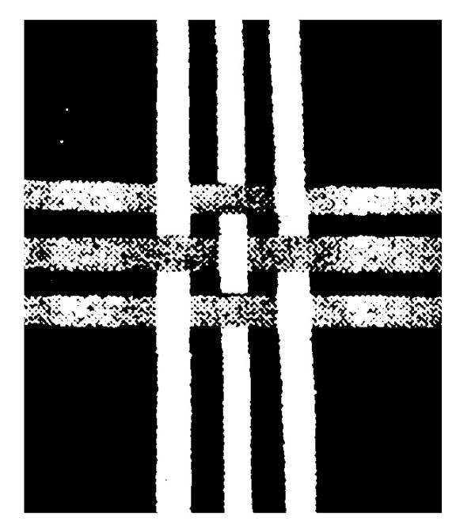
Đan nong hai: (Còn gọi là lồng hai lòn hai)
Cách đan này còn tùy theo độ dày, mỏng, lớn, nhỏ của nan mà cac bạn có thể đan thành những vật dụng thích hợp như rổ, rá, giàn, sàng, cót, phên
Xếp ít nhất là 6 nan, làm chuẩn ở hàng dọc. Lấy từng nan đan xen vào hàng ngang, cứ 2 nan nâng lên thì 2 nan đè xuống, xen kẽ nhau từng nan một (xem hình)
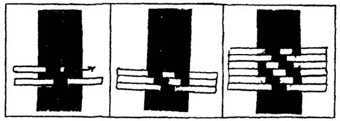
Đan nong ba: (còn gọi là lồng ba)
Dùng đan những vật dụng như thúng, mủng, nong, nia, dè... Xếp ít nhất là 9 nan dọc... Thao tác nhu nong hai, nhưng thay vì nâng lên hai thì các bạn nâng lên ba (xem hình)
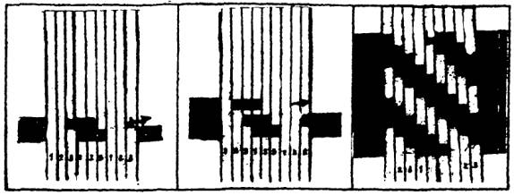
Đan mắt cáo:
Dùng để đan sọt, bội, lồng, rọ, mành mành...
1- Đầu tiên, các bạn lấy 2 nan số 1 và 2 bắt chéo chữ X.
2- Tiếp theo lấy thêm 2 nan số 3 và 4, một nan cài trên, một nan cài dưới chữ X
3- Nan số 5 cài vào giữa chéo nan số 2, 3 và 4, song song với nan số 1. Nan số 6 cài vào các nan 1, 3, 4 và 5, song song tiếp tục.
4- Khi thấy đường kính phần đáy đúng theo ý của mình thì dùng 2 sợi dây nan vuông hay tròn rồi bẻ lên thành (hay vách). Kể từ đây, cứ mỗi lần đan thêm một hàng mắt cáo là chúng ta cần nối nan thành một vòng tròn.
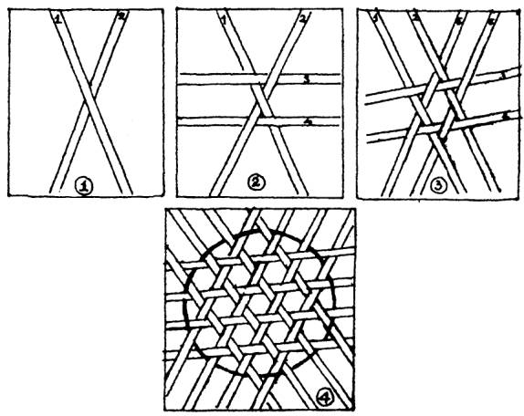
MỞ VÀ RÁP MỘNG - NGÀM - CHỐT
Trong các công việc xây dựng nhà cửa làm nơi trú ẩn, chế tạo vật dụng... nếu các bạn có một chút khéo léo và kiên nhẫn để mở ráp một số mộng, ngàm, chốt... như hình dưới đây, thì những vật dụng ấy tăng thêm phần chắc chắn và thẩm mỹ
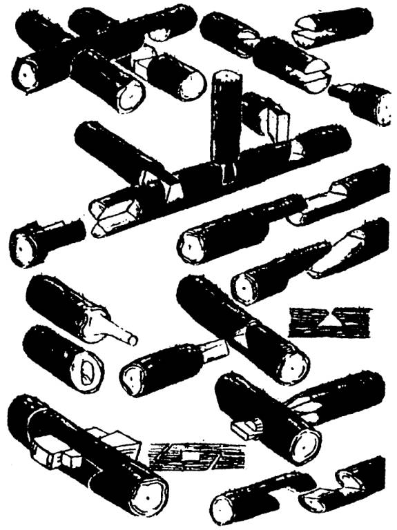
CÁC VẬT DỤNG LÀM TỪ ĐẤT SÉT
Nếu trong vùng các bạn đang ở có đất sét, thì các bạn có thể chế tạo ra rất nhiều đồ dùng từ chất liệu ấy.
Các loại đất sét
1- Cao lanh: Là loại đất sét trắng tốt, không tạp chất, dùng làm đồ sứ
2- Đất sét vàng: (từ nhạt đến đậm) dùng làm đồ gốm, chén bát.
3 Đất sét màu xám tro: dùng làm gạch
Cách lọc loại bỏ tạp chất:
Thường thì chúng ta lấy đất sét ở tầng mặt, nên thường lẫn lộn tạp chất, đá, sỏi... Cần phải lược bỏ. Các bạn lần lượt làm theo các công đoạn sau:
1- Hoà tan đất sét vào trong một chậu nước
2- Với tạp chất ra ngoài
3- Đào chỗ đất khô ráo một lỗ vuông, sâu khoảng 50 cm
4- Đỗ đất vào lỗ, chừa cặn lại
5- Chờ cho rút hết nước, gạn lớp đất sét mịn đen nhồi
Cách nhồi đất sét
Lấy một miếng ván gỗ, bỏ đất sét lên rồi nhồi bằng chân hay bằng tay, nếu thấy đất sét quá dẻo (dính vào chân tay) thì cho thêm cát mịn vào. Trường hợp những dụng cụ chế tạo cần phải nung “dã chiến” thì cho thêm tro vào để khỏi bị nứt
Giữ cho đất sét luôn được dẻo
1- Đậy đất sét bằng bao bố hay giẻ ướt
2- Vẩy nước mỗi ngày
3- Nếu số lượng ít, có thể cho vào túi nilon rồi cột miệng lại cho kín
Cách chế tạo vật dụng
Muốn chế tạo vật dụng bằng đất sét, trước tiên các bạn phải biết cách nắn hình dẹt và hình đũa
Nắn hình dẹt:
Lấy một cục đất sét lăn tròn trên một mặt phẳng, rồi dùng lòng bàn tay ấn dẹt xuống, dùng ngón tay sửa độ dày cho đều. Hình dẹt dùng làm các đáy vật dụng
Nắn hình đũa:
Lấy một cục đất sét bằng quả quít để trên một mặt phẳng. Dùng hai lòng bàn tay lăn tới, lăn lui cho tới khi thành hình chiếc đũa có đường kính bằng nhau (hơi nhọn hai đầu). Làm thành nhiều chiếc đũa như vậy
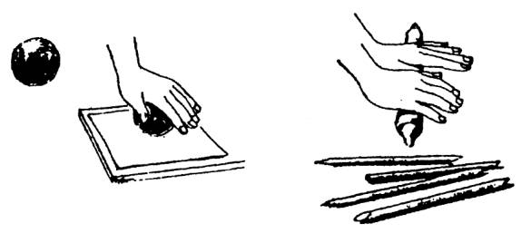
Tạo hình:
- Để những đoạn đất sét hình đũa lên hình dẹt, uốn theo vòng tròn nối tiếp chồng lên nhau cho cao dần. Nắn làm sao cho hông và miệng rộng ra hay hẹp lại tùy ý
- Dùng ngón tay trét cho hai mí ráp lại, kể cả bên trong lẫn bên ngoài. Sửa lại hình dáng cho vừa ý.
- Dùng đất sét loãng thoa áo bên ngoài món đồ cho láng
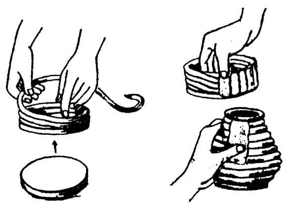
Phơi khô:
Sau khi đã tạo hình xong, các bạn phải đem để nơi thoáng mát vài ngày cho thật khô (đừng phơi nắng, sẽ bị nứt)
Nung:
Trong các lò gốm, người ta phải có lò nung và nung chầm chậm nhiều ngày, nhưng ở những nơi hoang dã, các bạn có thể nung theo kiểu “dã chiến” theo cách sau:
Chất các vật dụng đã tạo hình và phơi khô lên với nhau, chừa khoảng cách để cho lửa và hơi nóng len vào. Chất cành lá, rơm cỏ phủ lên chung quanh rồi đốt cho cháy khoảng một vài giờ cho lửa tàn và nguội thì lấy ra. Lúc này thì đã có thể đem sử dụng (khi nung dã chiến, các bạn phải cho tro vào đất sét trước khi tạo dáng, nếu không sẽ bị nứt bể)
Tùy theo sự khéo tay của bạn, từ đất sét, chúng ta có thể tạo ra vô số vật dụng như: nồi niêu, thau chậu, bình lọ, chum khạp, chén bát...
ĐAN LƯỚI
Lưới là một công cụ đánh bắt chim, thú, cá... rất hiệu quả. Tuy nhiên, để hoàn thành một tấm lưới khả dĩ có thể đánh bắt được, thì cũng không phải dễ dàng gì. Ngay cả lúc trong tay các bạn có đầy đủ nguyên vật liệu... Nếu các bạn không có sự kiên nhẫn cộng với một quyết tâm cao.
Để đan một tấm lưới, các bạn phải chuẩn bị đầy đủ các dây, nhợ và phải làm một số ghim và cữ (cỡ).
Ghim:
Được làm bằng những thanh tre hay gỗ nhỏ có mổ khuyết một đầu theo hình minh hoạ, dùng để vô (quấn) sợi đan lưới. Ghim có nhiều cỡ to, nhỏ, dài, ngắn tùy theo mắt lưới mà chúng ta định đan
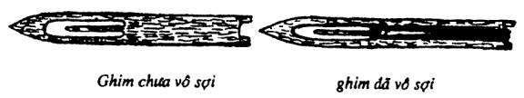
Cữ hay cỡ:
Là một thanh tre hay gỗ hình chữ nhật, dài khoảng 10-15 cm, ở giữa hơi to. Cữ dùng để canh mắt lưới cho đều nhau, nếu không, mắt lưới sẽ có lỗ to, lỗ nhỏ.
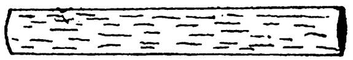
Khi đan lưới, người ta dùng cữ để canh cho đều và dùng ghim để tạo nên những nút thợ dệt đơn (hay thợ dệt kép) để khóa những mắt lưới. Cái khó nhất là khi gầy đầu, vì lúc đó chưa có thể dùng cữ, nếu không tạo được những lỗ (người gọi là giếng) đều nhau, thì tay lưới có thể bị xộc xệch.
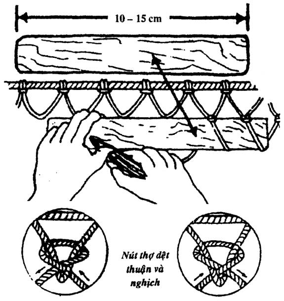
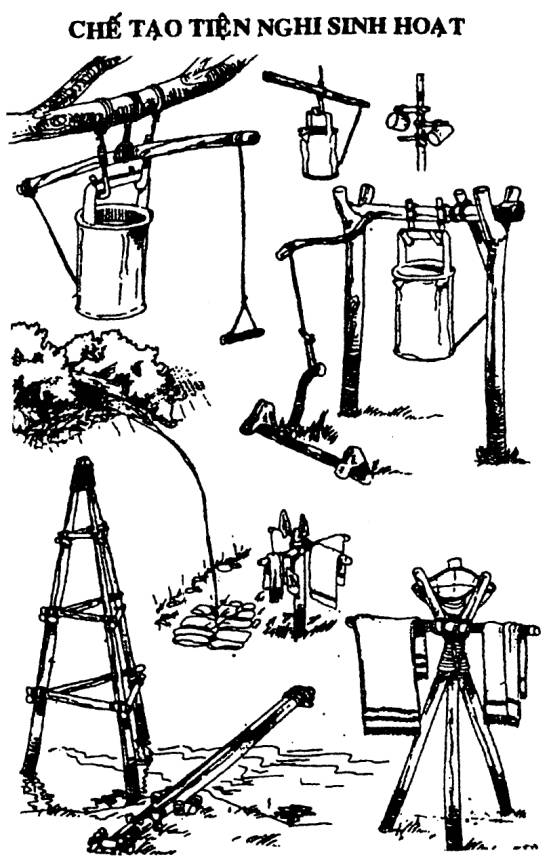